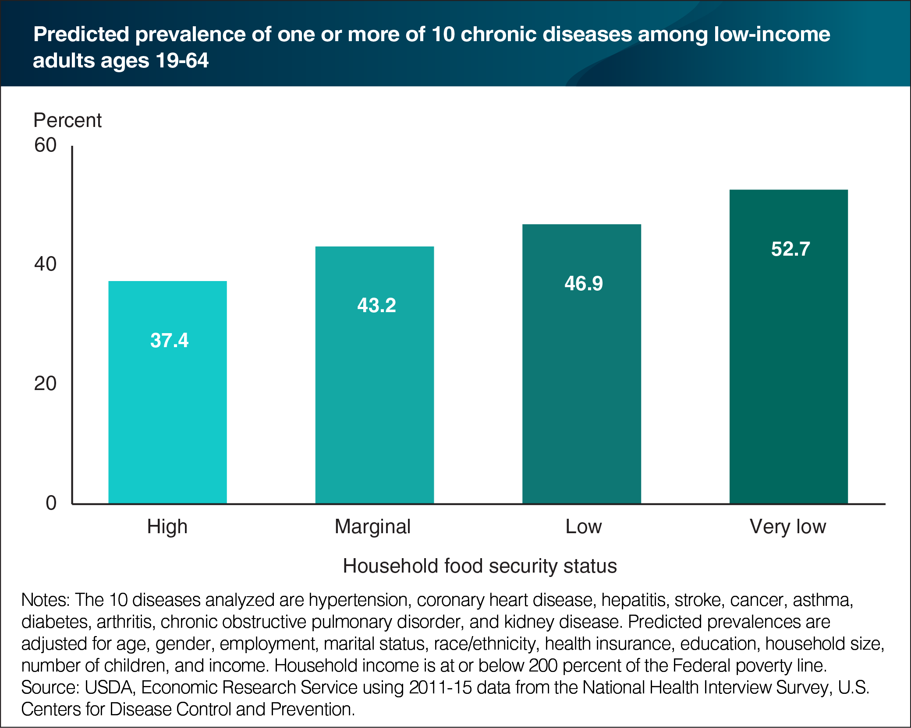
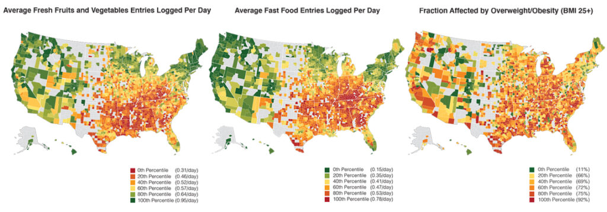
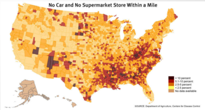

Low-income families face significant challenges in maintaining healthy diets due to financial barriers, tight schedules, and limited education on nutrition. These obstacles result in a reliance on processed and fast foods, which negatively impacts their health and well-being.
This creates unfair advantages between low-income populations who can't afford a healthy diet and people who can. It affects their day-to-day lives, making it harder for them to be productive and also leading to several chronic diseases, such as diabetes and heart disease.

About 13% of the U.S. population lives in low-income, low-access areas, where the nearest grocery store is over a mile away in urban settings or 10 miles away in rural areas. Additionally, food insecurity rates are significantly higher among Black and Hispanic households, nearly double those of white households. Minority populations living in these underserved areas face greater barriers to obtaining fresh, healthy food, creating disparities that further increase health issues.

